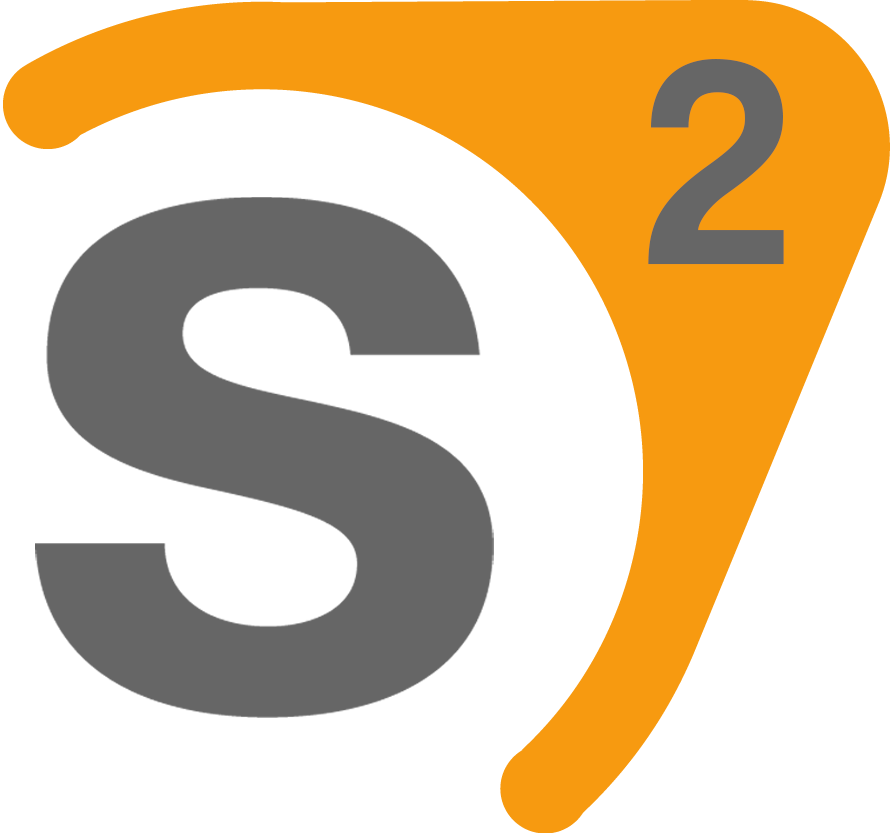

I am skilled in using...
 |
 |
 |
 | ||
| Microsoft Excel | Python | SQL | Adobe Suite (Content Creation) |
Web Development (CSS, HTML, CMS) |
Source 2 (Level Design) |
|---|---|---|---|---|---|
| In my undergraduate courseload as well as my place of work, Excel has proven useful in data analysis and wrangling. | Python, especially Pandas and Scikit-learn, have been immensely useful not only for data analysis, but also for my undergraduate research thesis. | I am experienced in using SQL for data architecture, wrangling, and presentation. In my undergraduate courseload as well as my place of work, I have used SQL in a multitude of projects and assignments. | Through my place of work on campus, I have become comfortable using Adobe products such as Adobe Premiere and have produced advertising content for Eastern Connecticut State University for the past 3 years. | The coursework in my undergraduate courseload required me to learn web development, such as HTML, CSS, and Javascript, and my work required me to learn how to work with CMS services such as Cascade. With these under my belt, I went ahead and developed this website. | Since making the jump from Source 1 to Source 2 in 2021, I have learned how to develop maps for a multitude of different games and experiences, creating not only a variety in the content I have produced, but a variety in the different approaches to level design. |